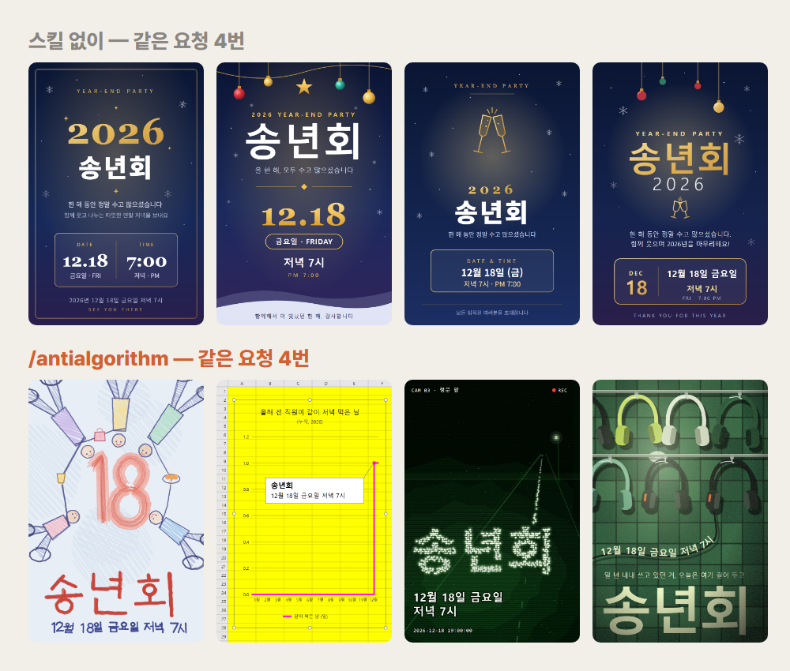
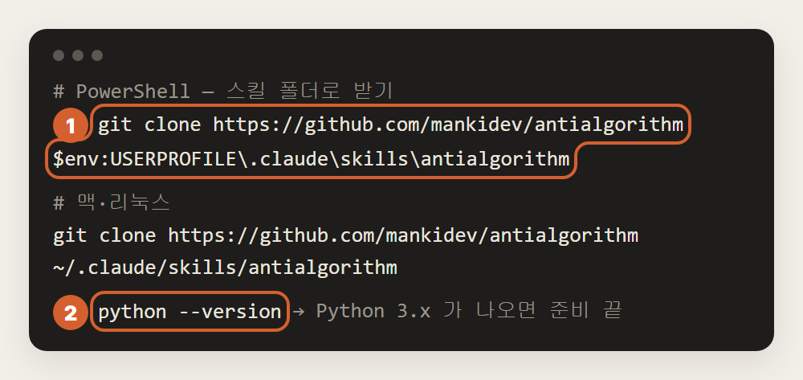
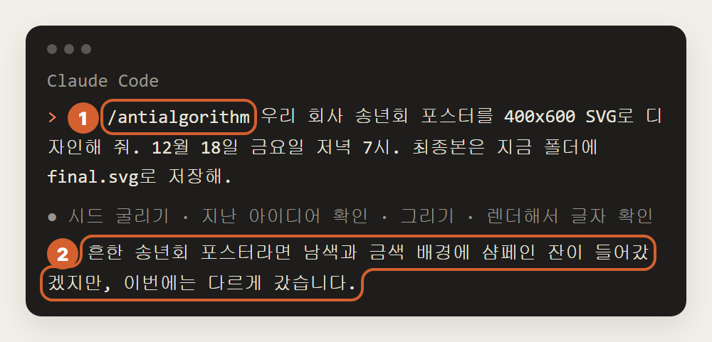
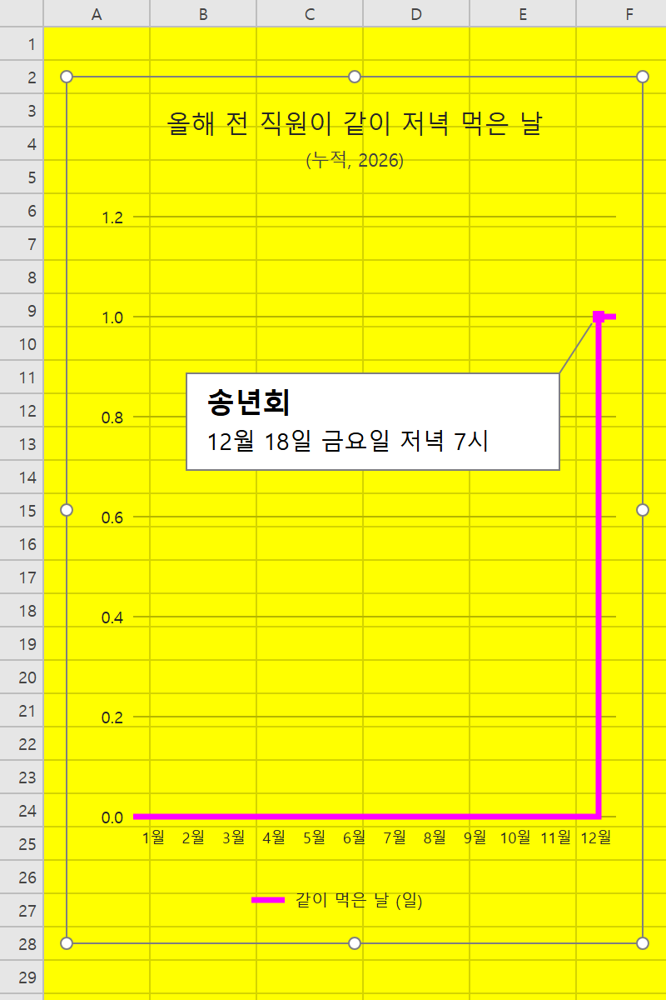
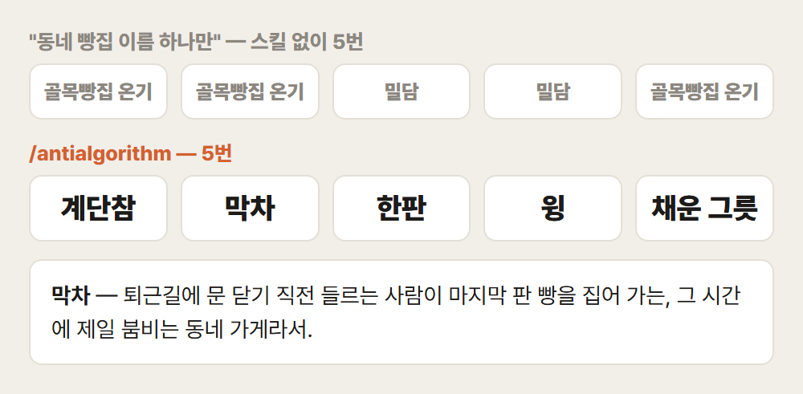
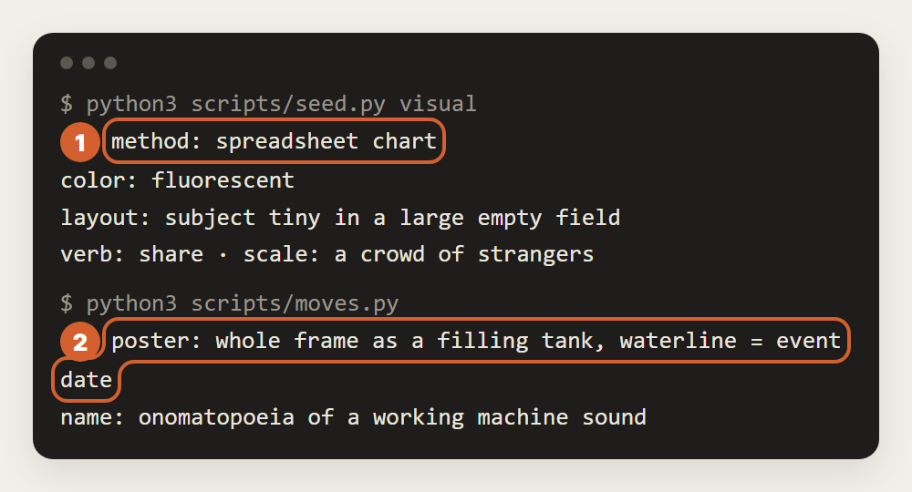

이름·문구·포스터 같은 걸 시킬 때, 클로드가 답하기 전에 '여기서 제일 뻔한 답'을 먼저 짚고 그걸 피해서, 이 경우에만 맞는 이유로 다른 안을 내게 하는 클로드 코드 스킬이에요. 요청이 짧으면 출발점(그리는 방법·색·배치)을 무작위로 굴려서 같은 말을 넣어도 사람마다 다른 게 나와요. 깃허브 공개 오픈소스(MIT)라 무료예요.

터미널(윈도는 PowerShell)에 1번 명령 한 줄이면 클로드 코드 스킬 폴더에 들어가요. 2번으로 파이썬이 있는지 확인해요. 그다음 클로드 코드를 새로 켜요.

평소처럼 시키되 맨 앞에 /antialgorithm을 붙여요(1). 이름·문구·포스터·표지·화면처럼 '정해진 답이 없는 일'에 써요. 누구를 위한 건지, 어디에 쓰는지 한 줄을 같이 적으면 그 사실에서 출발해 더 잘 맞아요. 끝나면 무엇을 피했고 왜 이 안인지 한 줄로 말해 줘요(2).

이 편에서 실제로 같은 요청을 네 번씩 돌렸어요. 스킬 없이는 네 번 다 남색 바탕·금색 글씨·별이었고, 스킬을 넣으니 크레용 그림·엑셀 차트·야간 CCTV·필름 사진으로 매번 달랐어요.

글도 같아요. '동네 빵집 이름 하나만'을 새 창에서 다섯 번 물으니 스킬 없이는 '골목빵집 온기'가 세 번, 스킬을 넣으니 다섯 번 다 다른 이름에 이유가 붙었어요.

요청이 짧으면 seed.py가 그리는 방법·색·배치 같은 출발점을 굴려요(1). 지난번 출발점은 history.jsonl에 남겨 다음엔 피해요. 한 번 통한 아이디어는 moves.py에 적어 두고(2) 다음엔 같은 수를 또 쓰지 않아요. 마음에 드는 게 나오면 그 축만 고정해서 다시 굴릴 수도 있어요(--keep).

처음 한 번
git clone https://github.com/mankidev/antialgorithm $env:USERPROFILE\.claude\skills\antialgorithm
처음 한 번
git clone https://github.com/mankidev/antialgorithm ~/.claude/skills/antialgorithm
송년회·워크숍·동호회
/antialgorithm 우리 회사 송년회 포스터를 400x600 SVG로 디자인해 줘. 12월 18일 금요일 저녁 7시. 최종본은 지금 폴더에 final.svg로 저장해.
이름 짓기
/antialgorithm 동네에 작은 빵집을 열어요. 가게 이름 하나만 지어 주고 이유는 한 줄로 써 줘.
도움이 되셨다면
@ai.antenna.kr
에서 바로 쓰는 AI 활용법을 계속 올립니다.